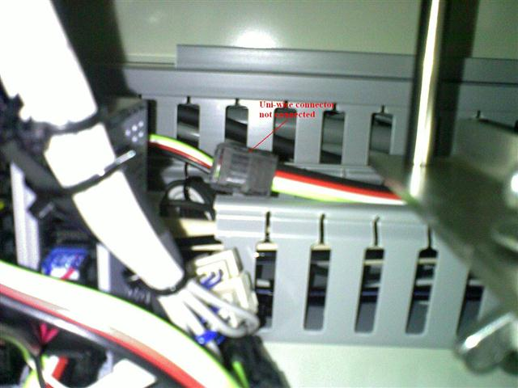

Service History
Subject: NS-8040 Disconnection of uni-wire 1 transmission line or terminal problem(WAR1704)
Handler Model: NS-8040 (S/N: 181654)
Controller: RC520
Date: 4 Dec 2009
Symptom
During the power up of the NS8040 handler S/N: 181654 in ASE, error "Disconnection of uni-wire 1 transmission line or terminal problem(WAR1704)" occurred.
From the event log can see that in Japan did experience these issue before.
Action
After further checking found that one of the Uni-wire for index arm and input shuttle sensor I/O not connected.

Cause